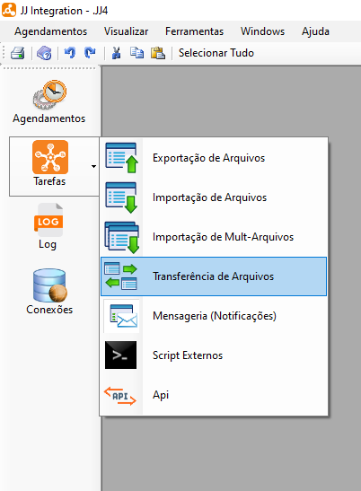
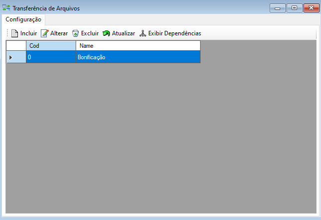
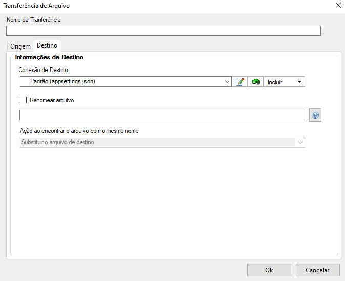
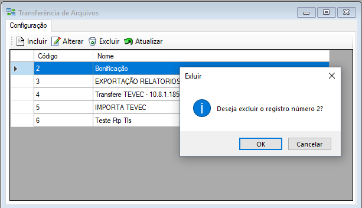

Transferência de Arquivos
Transferência de Arquivos é uma função onde pode-se incluir, alterar, excluir arquivos cadastrados no sistema e atualizar a lista de arquivos.
Esta seção pode ser acessada pelo menu lateral em Tarefas ou menu de utilidades > Ferramentas > Transferência de Arquivos.
A transferência de arquivos é a ação de mover fisicamente arquivos de um local para outro. Isso pode ocorrer entre diferentes sistemas, servidores, serviços de armazenamento em nuvem ou até mesmo entre diretórios do mesmo sistema.

 Transferência de Arquivos
Transferência de Arquivos
- Ao selecionar o sistema irá exibir uma tela onde será possível incluir, alterar, excluir, atualizar transferências de arquivos e exibir dependências.

- Para incluir uma nova transferência selecione o botão Incluir
 . Ao selecionar o sistema irá exibir uma tela para cadastro onde terá um campo para preenchimento do nome da transferência e mais duas abas de configurações sendo elas: origem e destino.
. Ao selecionar o sistema irá exibir uma tela para cadastro onde terá um campo para preenchimento do nome da transferência e mais duas abas de configurações sendo elas: origem e destino.

- Na aba "Destino" preencha as informações de conexão de destino, se irá renomear o arquivo e ação ao encontrar o arquivo.

Para alterar uma transferência selecione a conexão desejada e após selecione o botão Alterar
 . Ao selecionar o sistema irá exibir uma tela para edição onde terá um campo para preenchimento do nome da transferência e mais duas abas de configurações sendo elas: origem e destino. Também é possível Duplicar transferência de arquivos já criada, visando simplificar o processo e produtividade.
. Ao selecionar o sistema irá exibir uma tela para edição onde terá um campo para preenchimento do nome da transferência e mais duas abas de configurações sendo elas: origem e destino. Também é possível Duplicar transferência de arquivos já criada, visando simplificar o processo e produtividade.Na aba "Origem" altere informações de conexão de origem, se irá descompactar, excluir o arquivo pós transferência e (ou) ignorado por filtro, configure os filtros.
- Na aba "Destino" altere as informações de conexão de destino, se irá renomear o arquivo e ação ao encontrar o arquivo.
- Para excluir um arquivo selecione o arquivo desejado e após selecione o botão Excluir
 , após selecionar o sistema irá exibir uma mensagem de confirmação, selecione botão "Ok" para confirmar e excluir.
, após selecionar o sistema irá exibir uma mensagem de confirmação, selecione botão "Ok" para confirmar e excluir.

Para atualizar a lista de arquivos selecione o botão Atualizar
 , após selecionar o sistema irá atualizar a lista sendo possível dar continuidade nas atividades normalmente.
, após selecionar o sistema irá atualizar a lista sendo possível dar continuidade nas atividades normalmente.Para exibir dependencias da tarefa selecionada, selecione o botão Exibir Dependências
 , após selecionar o sistema irá exibir a lista de dependências da tarefa caso exista alguma.
, após selecionar o sistema irá exibir a lista de dependências da tarefa caso exista alguma.